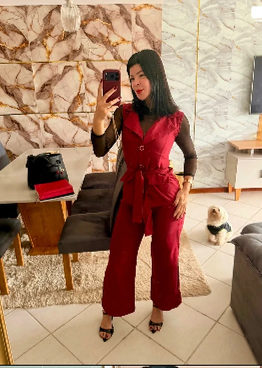

◌
Escutar
Conhecer sua história, suas prioridades e o que você busca neste momento.
Cuidado que começa com escuta. Estratégias feitas para a sua rotina, sua saúde e seus objetivos — muito além da balança.

A alimentação faz parte de uma vida inteira — com histórias, horários, escolhas e desafios que não cabem em uma dieta pronta.
Por isso, cada acompanhamento começa por você. A gente entende sua realidade e constrói junto um caminho possível e sustentável, com autonomia, equilíbrio e menos culpa à mesa.
Como funciona o acompanhamento ↗Um acompanhamento individualizado para transformar intenção em escolhas que cabem na vida real.
Conhecer sua história, suas prioridades e o que você busca neste momento.
Consulta detalhada, avaliação clínica e análise aprofundada dos exames laboratoriais.
Estratégias nutricionais pensadas para seus objetivos e para a sua realidade.
Suporte e direcionamento para ajustar o percurso e desenvolver autonomia.
Acredito que cada pessoa merece um cuidado que enxergue além do prato. Meu trabalho é entender suas necessidades, acolher seus desafios e construir com você uma relação mais equilibrada com a comida.
Sem extremismos ou culpa. Com acompanhamento próximo, direcionamento e respeito ao seu momento.
Escolha o formato que faz sentido para você. A primeira conversa é um convite para conhecer meu trabalho e tirar suas dúvidas.
Falar com a Ana no WhatsApp